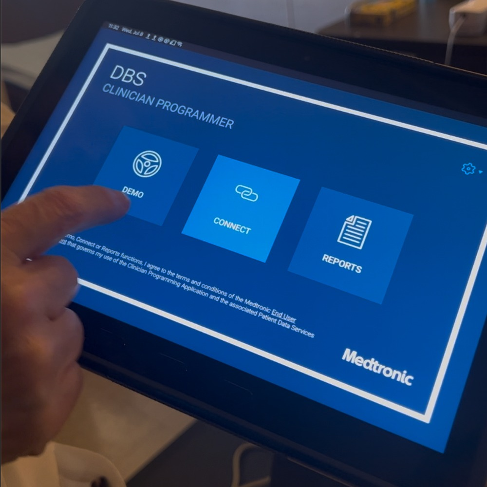
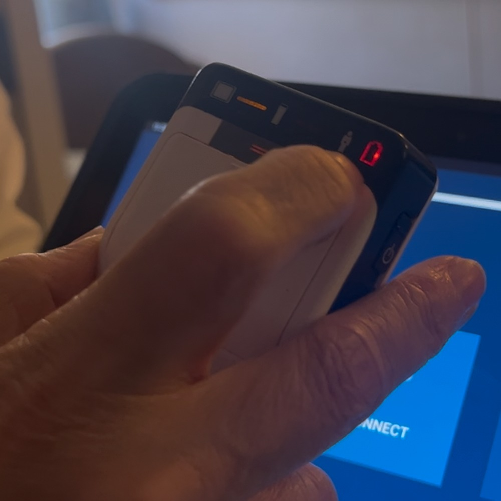
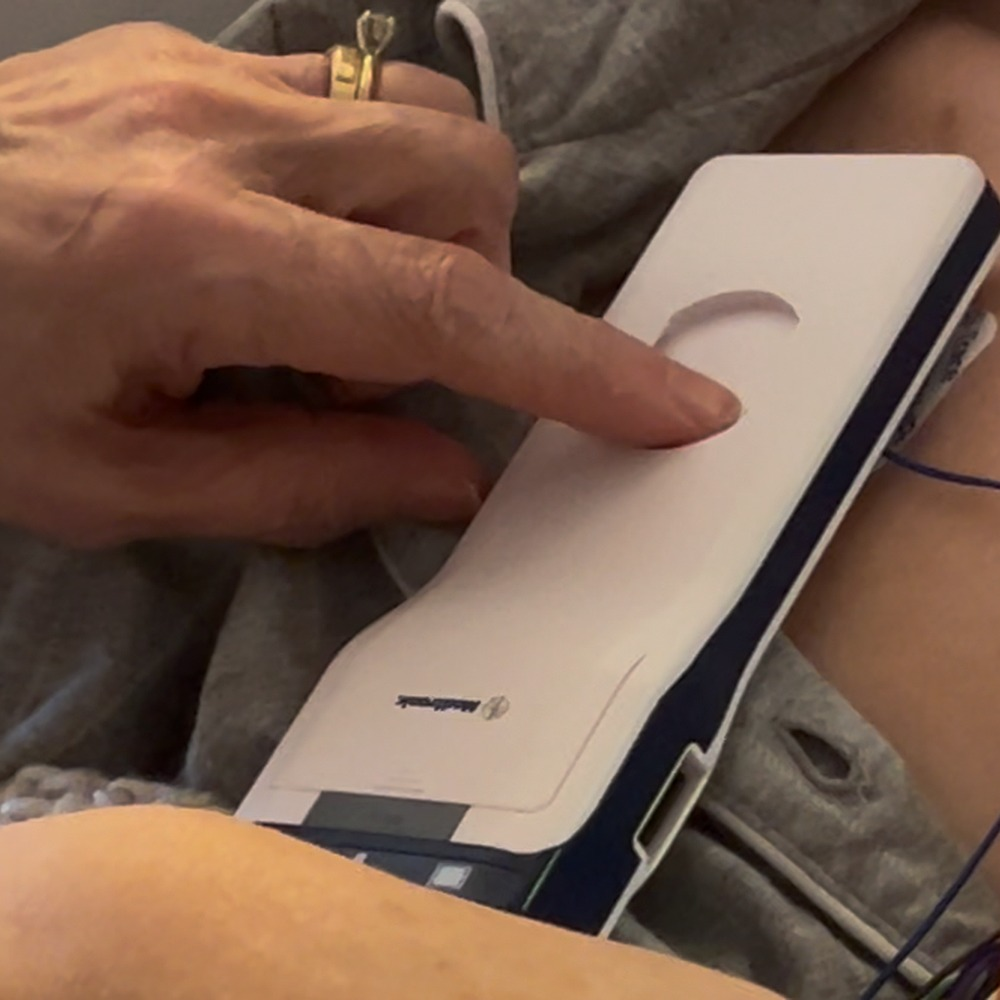
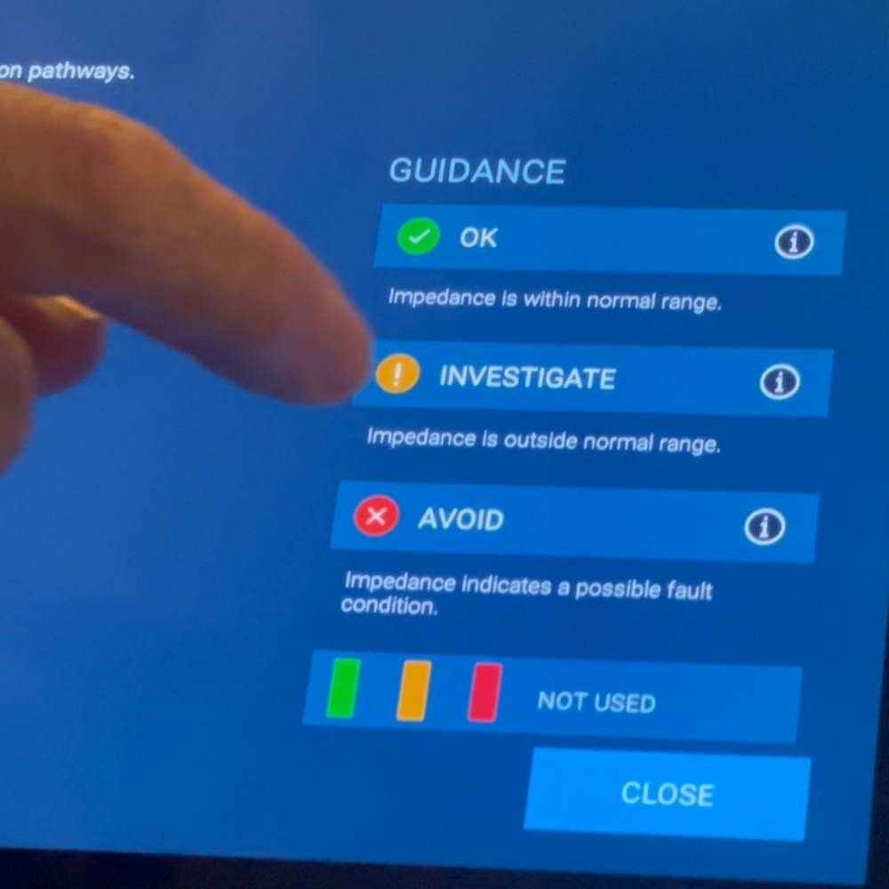
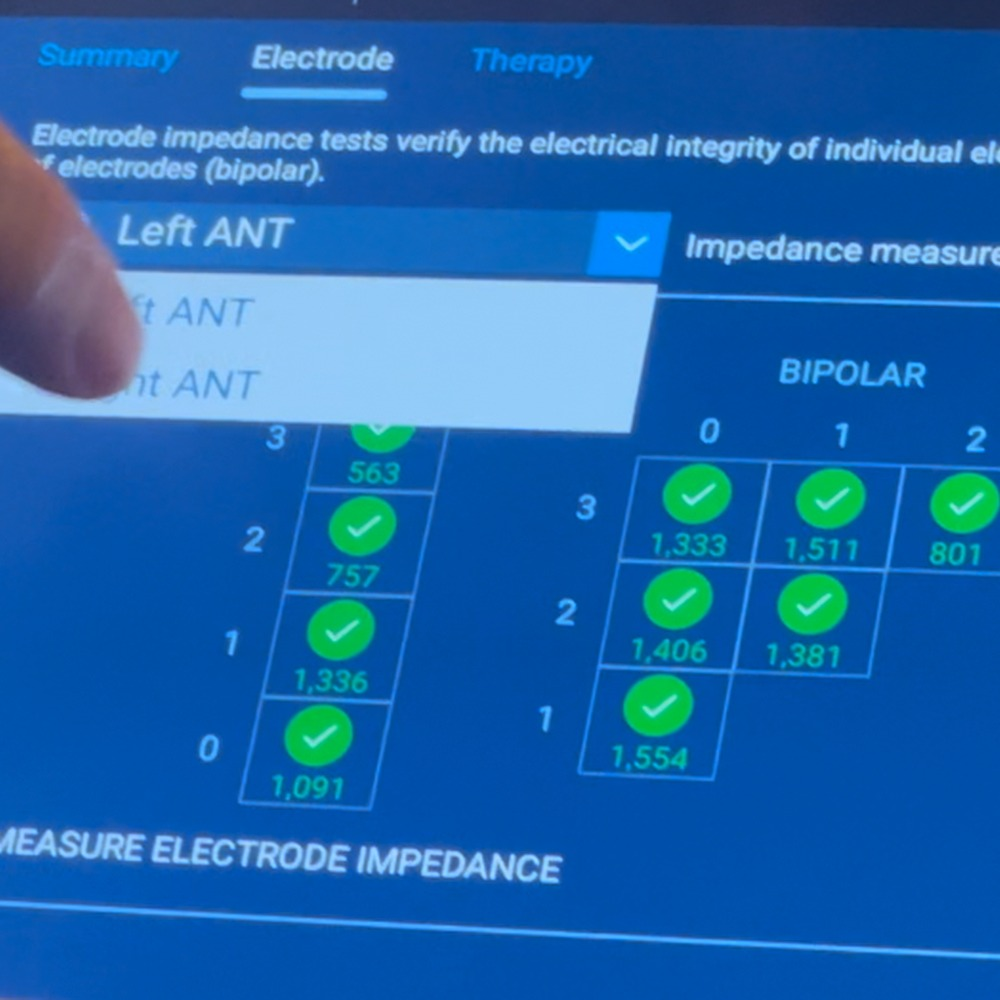
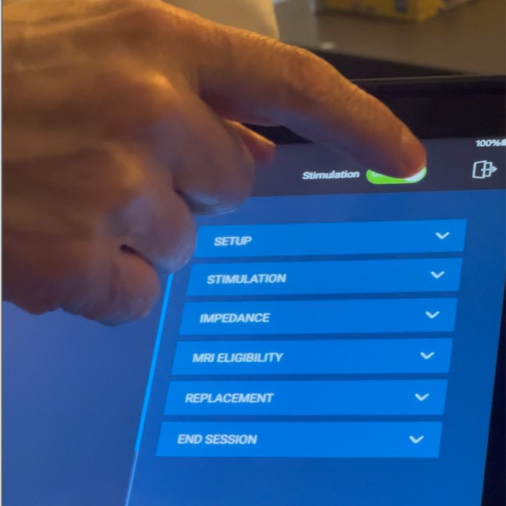
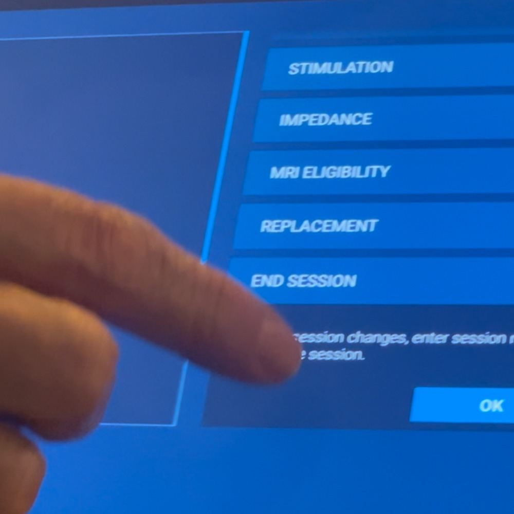

1. Start the tablet and open DBS
Open the DBS clinician programmer screen and start from the main DBS menu.

Clinical Education Manual
Medtronic DBS clinician programmer workflow for turning therapy off and back on, derived from a bedside teaching demonstration.
| Step | Action |
|---|---|
| 1. | Start the tablet and open the Medtronic DBS clinician programmer app. |
| 2. | Connect to the patient by selecting Connect and turning on the communicator. |
| 3. | Position the communicator over the implanted generator and keep it in place for the older device shown. |
| 4. | Review impedance guidance: green/OK, yellow/Investigate, red/Avoid. |
| 5. | Check impedance on both sides/leads as applicable and confirm the values are acceptable. |
| 6. | Turn stimulation Off from the stimulation control. |
| 7. | Open End Session, confirm the session is complete, and exit. |
| Stop / Escalate | Reason |
|---|---|
| Impedance is red or marked Avoid. | In the teaching demonstration, MRI is not allowed if a contact appears broken/red. |
| Communicator will not connect. | The older device in the demo requires direct physical placement over the implanted generator; newer devices may connect by Bluetooth. |
| Wrong group/program is selected. | Before leaving therapy off or turning it back on, verify the selected group is the intended one. |
Open the DBS clinician programmer screen and start from the main DBS menu.

Select Connect and turn on the communicator. The light indicates the communicator is powered and ready to connect.

For the older device shown, place the communicator directly over the implanted generator and keep it positioned while interrogating or changing therapy.

Review the impedance guidance screen. Green/OK is within normal range; yellow/Investigate needs review; red/Avoid suggests a possible fault condition.

Check the impedance screen for both sides/leads as applicable. In this demo, the green checks indicate acceptable values.

Use the stimulation control to switch therapy off. Confirm the control reflects the intended off state before proceeding.

Open End Session, confirm the session changes, and exit the session.

The turn-on process is the same connection workflow in reverse: reconnect to the device, verify the intended group/program, then switch stimulation to On. The teaching demonstration emphasizes correcting the selected group before leaving the patient set up for the next turn-on.
| Check | What to confirm |
|---|---|
| Correct patient/device connection | The programmer has connected/interrogated the implanted DBS device. |
| Correct group/program selected | The boxed or selected group is the one intended for the patient when therapy is restored. |
| Stimulation status | Switch stimulation to On, then confirm the programmer reflects the intended on status before ending the session. |
| Clinical context | Confirm whether this is post-MRI restoration, clinic programming, or another supervised workflow. |
Older vs newer devices: the demonstrated older device requires direct communicator placement over the generator; newer devices may use Bluetooth.
MRI safety: The teaching demonstration states that if impedance/contact status is red, MRI should not proceed because this may indicate a broken contact.
Group selection matters: before turning off for MRI or preparing for later turn-on, make sure the intended group/program is selected.
Programming details are separate: the video includes discussion of double monopolar settings, volts vs milliamps, and cycling intervals. Those details should not be treated as a generic programming protocol.